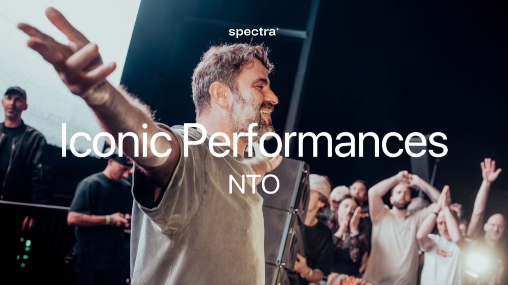

2:03:36The YouTube player loads here, on this pageOpen on YouTube ↗
NTO Live — Spectra, Liège 2026
- Artist
- NTO
- Festival
- Spectra
- Location
- Liège, Belgium
- Genre
- Melodic techno · Live act
- Uploaded
- 30.09.26
- Channel
- NTO
- Views
- 66,693
- Length
- 2:03:36
The French producer's live show, played as a hybrid live act rather than a DJ set, captured in full at Spectra in Liège. Two hours of emotive, melodic techno built in real time.
Tracklist
[Tracklist — added by editors for each set]